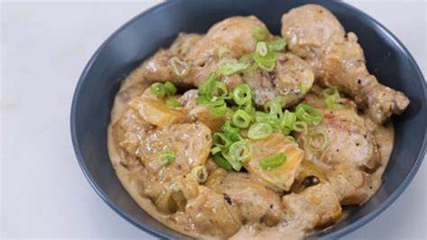

Ginataang Manok Recipe
What is Ginataang Manok (Chicken Cooked in Coconut Milk)?
Ginataang manok is a Filipino chicken soup made from chicken in coconut milk with green papaya and other vegetables, garlic, ginger, onion, patis (fish sauce) or bagoong alamang (shrimp paste), and salt and pepper. It is a type of ginataan. The dish is often served with steamed rice and enjoyed as a main course4.
Ingredients
3 tablespoons canola oil
½ cup sliced fresh ginger
1 (5 pound) whole chicken, cut into pieces
salt and ground black pepper to taste
2 (14 ounce) cans coconut milk
1 (10 ounce) package frozen chopped spinach, thawed and drained
Instructions / How to Cook
1. Heat oil in a large skillet over medium heat and stir in ginger. Cook and stir until fragrant and lightly browned. Remove ginger and set aside.
2. Season chicken with salt and pepper. Place chicken in the same skillet over medium-high heat without crowding. Cook until chicken is lightly brown on all sides.
3. Return ginger to the skillet and add coconut milk. Bring to a boil, then cover with the lid tilted to allow steam to escape. Reduce heat to medium-low and simmer, stirring occasionally, until chicken is no longer pink at the bone, about 30 minutes.
4. Stir in spinach and simmer uncovered until spinach is warmed through, 8 to 12 minutes. Season with salt and pepper.